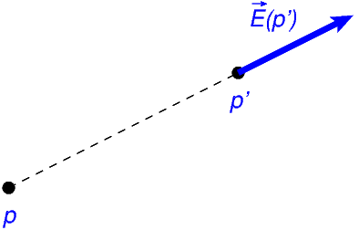
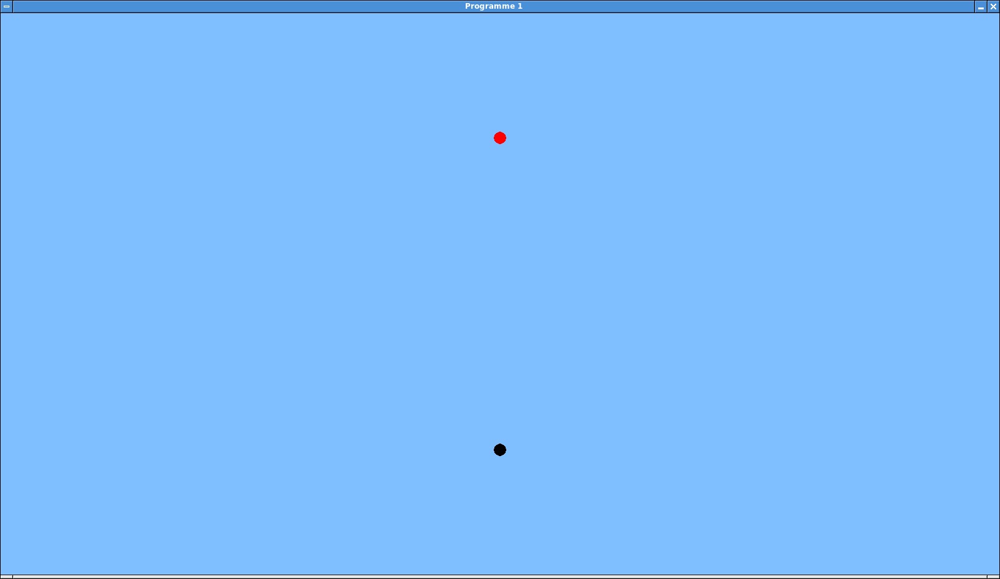
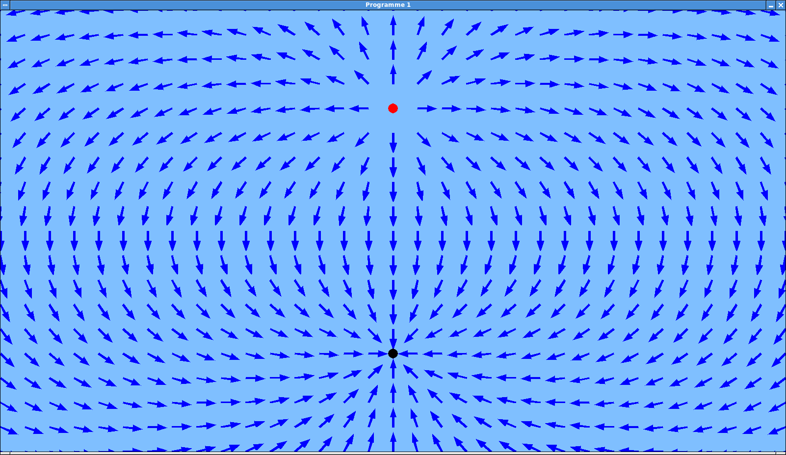
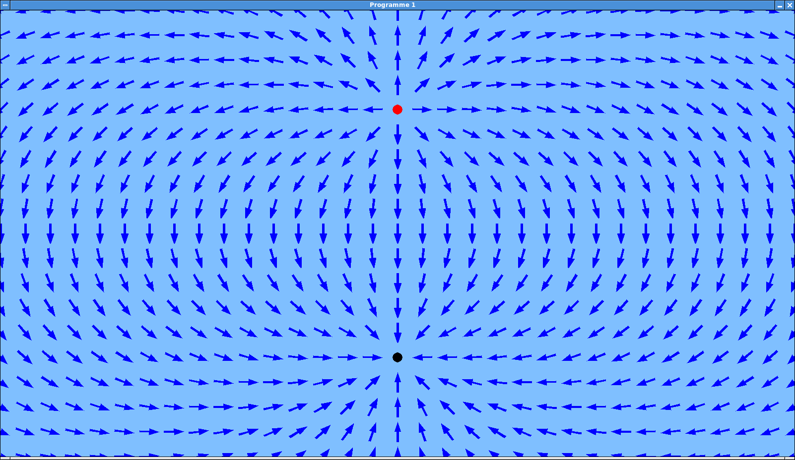
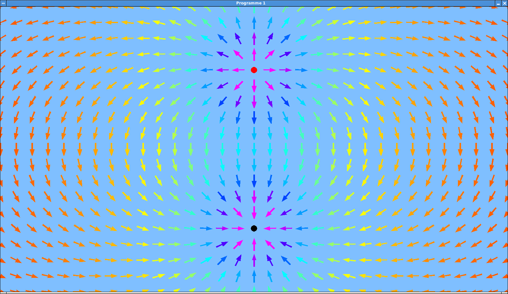

Laboratoire 1¶
Les notions abordées dans ce laboratoire sont les suivantes:
- Mathématique:
- La notion de champ vectoriel.
- Physique:
- Les charges électriques.
- Le champ électrique.
- Programmation Python:
- L’ajout et la suppression d’éléments d’une liste.
Programme 1: Visualisation du champ électrique¶
Ce premier projet a pour but de vous familiariser avec la notion de champ électrique. Le programme que vous allez développer permettra d’afficher graphiquement ce champ dans un espace à deux dimensions, pour un ensemble quelconque de charges.
Le champ électrique¶
Le champ électrique est un champ vectoriel (ce qui signifie qu’il associe un vecteur à chaque point de l’espace) créé par la présence de charges électriques.
Principes:
Pour une charge électrique \(q\) (exprimée en Coulombs (C), et pouvant être positive ou négative) placée en un point \(p\), le champ créé par cette charge en un point \(p'\neq p\) est un vecteur \(\vec{E}(p')\) tel que:
Ce vecteur est orienté selon la droite qui relie \(p\) à \(p'\). Il s’écarte de \(p\) si la charge \(q\) est positive, et est dirigé vers \(p\) si cette charge est négative.
Champ électrique.
La norme de ce vecteur est égale à \(\displaystyle\frac{k|q|}{r^2}\), où \(r\) est la distance qui sépare \(p\) et \(p'\), et \(k \approx 8.9876\, 10^9 N m^2/C^{-2}\) est la constante de Coulomb.
En présence de plusieurs charges, le champ électrique en un point est égal à la somme vectorielle des champs créés en ce point par chacune des charges.
{kind=link}
Programme de base¶
La première étape consiste à écrire un programme qui ouvre une fenêtre de 1600 par 900 pixels et la peint dans une couleur uniforme. Le plus simple consiste à partir de cet exemple, similaire à celui du laboratoire 4 de la première partie du cours:
import math
import pygame
import sys
# Constantes
BLEUCLAIR = (127, 191, 255)
# Paramètres
dimensions_fenetre = (1600, 900) # en pixels
images_par_seconde = 25
# Initialisation
pygame.init()
fenetre = pygame.display.set_mode(dimensions_fenetre)
pygame.display.set_caption("Programme 1")
horloge = pygame.time.Clock()
couleur_fond = BLEUCLAIR
# Dessin
fenetre.fill(couleur_fond)
while True:
for evenement in pygame.event.get():
if evenement.type == pygame.QUIT:
pygame.quit()
sys.exit()
pygame.display.flip()
horloge.tick(images_par_seconde)
Recopiez ce programme dans un fichier appelé prog-1.py, et
vérifiez qu’il fonctionne correctement. (Veillez à placer ce
programme dans un répertoire dédié à cette seconde partie du cours,
afin de ne pas écraser vos réalisations du premier quadrimestre.)
Gestion des objets chargés¶
L’étape suivante vise à ajouter au programme un mécanisme permettant de retenir
l’ensemble des objets chargés qui engendrent le champ. L’idée est de représenter
chaque objet par un triplet (x, y, q), où
(x, y)sont les coordonnées de l’objet, exprimées en pixels dans le repère de la fenêtre.qest la charge électrique de l’objet, exprimée en Coulombs et pouvant être positive ou négative.
L’ensemble des objets à considérer sera alors représenté par une liste de triplets
(x, y, q), mémorisée dans une variable objets.
Procédure à suivre:
Avant de rentrer dans la boucle principale du programme, initialiser la variable
objetsà l’aide d’une liste vide.Définir une fonction
ajouter_objet(x, y, q)chargée d’ajouter àobjetsle triplet(x, y, q).Note: En Python, l’instruction
l.append(v)permet d’ajouter la valeurvà la listel.Invoquer deux fois la fonction rédigée au point précédent, afin de créer un objet de charge \(10^{-6} C\) situé aux coordonnées (800, 200), et un autre de charge \(-10^{-6} C\) situé en (800, 700).
Créer une fonction
dessiner_objets()destinée à afficher les objets dans la fenêtre. Ceux-ci seront représentés par des disques de 10 pixels de rayon, de couleur rouge pour les charges positives, et noire pour les charges négatives.Notes:
Pour parcourir tous les éléments
vd’une listel, le plus simple est d’utiliser la construction:for v in l: instructions manipulant v
Puisque cette version du programme ne sera pas amenée à faire bouger les objets, l’affichage de ceux-ci peut être réalisé avant d’entrer dans la boucle principale du programme.
Tester votre programme. Vous devriez obtenir un résultat similaire à celui-ci:
Affichage des objets chargés.
{kind=link}
Calcul du champ¶
L’objectif est à présent de balayer l’espace de la fenêtre afin de calculer et d’afficher le champ en différents points de celle-ci. Pour dessiner des vecteurs, vous allez réutiliser les fonctions déjà développées dans le laboratoire 2 de la première partie du cours.
Marche à suivre:
Ecrire une fonction
dessiner_champ()qui balaie les deux dimensions de la fenêtre avec un pas de 50 pixels. Afin d’obtenir un affichage correct à proximité des bords de la fenêtre, le plus simple est de commencer ce balayage un peu avant et de le terminer un peu après les coordonnées visibles.En d’autres termes, pour une fenêtre de 1600 par 900 pixels, le balayage en X enumèrera les coordonnées -50, 50, 100, 150, …, 1600, 1650, et en Y les coordonnées -50, 50, 100, 150, …, 900, 950.
Pour chaque paire de coordonnées
(x, y)balayée pardessiner_champ(), dessiner une flèche indiquant la direction du champ électrique en(x, y). Cette opération s’effectue de la façon suivante:Calculer le champ électrique en
(x, y)à l’aide d’une nouvelle fonctioncalculer_champ(x, y). Cette fonction doit calculer la somme vectorielle du champ électrique créé par chaque objet contenu dans la listeobjets.La formule du champ électrique créé en un point par un objet chargé a été donnée au début de ce tutoriel. Note: On peut considérer qu’une distance d’un pixel dans la fenêtre correspond à 1 m dans la réalité, afin de ne pas avoir à effectuer de conversion d’unités.
Il y a un cas particulier à considérer: Le champ électrique n’est pas défini à l’endroit même où se trouve une charge. Pour traiter ce cas, il suffit de détecter dans
calculer_champ(x, y)la situation où la distance entre une charge et le point(x, y)est inférieure à un seuil donné (par exemple, 20 pixels), et à retournerNonedans ce cas. Lorsque la fonctiondessiner_champ()reçoit cette valeurNone, il suffit alors qu’elle ne dessine rien aux coordonnées(x, y).Appelons \(\vec{e}\) le vecteur retourné par
calculer_champ(x, y), qui correspond donc au champ électrique total en(x, y). Pour afficher la direction de ce vecteur, nous allons calculer\(\displaystyle\vec{e}' = 40\frac{\vec{e}}{|\vec{e}|}.\)
En d’autres termes, \(\vec{e}'\) est un vecteur de même direction que \(\vec{e}\), mais avec une norme égale à 40 pixels.
Ce calcul échouera si \(\vec{e}\) est le vecteur nul. (En effet, dans ce cas, le champ ne possède pas de direction.) Pour gérer ce cas de façon robuste, le plus simple consiste à ne rien dessiner lorsque la norme de \(\vec{e}\) est inférieure à un seuil donné, par exemple \(10^{-10}\).
Appeler la fonction
dessiner_vecteur()afin d’afficher \(\vec{e}'\) à partir de l’origine(x, y).Vous pouvez récupérer cette fonction depuis le programme 4 que vous avez développé dans la première partie du cours. Si vous ne disposez plus de ce programme, demandez à un autre groupe de vous fournir cette fonction.
Ne pas oublier d’appeler
dessiner_champ()avant d’exécuter la boucle princpale du programme.Tester votre programme. L’affichage obtenu devrait être similaire à celui-ci:
Affichage du champ.
{kind=link}
Amélioration de l’affichage¶
La version actuelle du programme permet déjà de bien visualiser les lignes de champ; celles-ci quittent les charges positives et se dirigent vers les charges négatives, en suivant différentes courbes.
Il y a cependant moyen d’obtenir un meilleur affichage. Premièrement,
le champ en un point (x, y) pourrait être représenté par une flèche
centrée en (x, y), plutôt que par une flèche d’origine (x, y).
Il s’agit d’un détail, mais qui permettrait d’obtenir une image qui ne présente
pas de « trou » autour des charges positives, ni de flèches qui s’accumulent
près des charges négatives.
Après avoir apporté cette modification à votre programme, son affichage devrait ressembler à ceci:
Affichage amélioré du champ.
{kind=link}
Une autre amélioration serait d’afficher l’intensité du champ en chaque point. Plutôt que de le faire en modifiant la longueur des flèches (ce qui rendrait le dessin illisible), nous allons dessiner ces flèches dans une couleur qui dépend de cette intensité.
Procédure:
Notons \(\vec{e}\) le champ électrique en un point
(x, y), calculé par un appel àcalculer_champ(x, y), lors du balayage effectué dansdessiner_champ().Calculer \(v = \sqrt{1000 |\vec{e}|}\). Comme le champ décroît proportionnellement avec le carré de la distance à une charge, ce choix permet d’obtenir une valeur proportionnelle à l’inverse de cette distance.
Sur base de la valeur de \(v\), calculer une couleur de la façon suivante:
Si \(0 \leq v \leq 8\), alors on effectue une interpolation linéaire entre les couleurs rouge (si \(v = 0\)) et jaune (si \(v = 8\)).
En Pygame, les couleurs sont représentées par des triplets
(r, g, b), oùr,getbsont des entiers entre 0 et 255 correspondant à la luminance des composantes rouge, vert et bleue (respectivement).Dans ce système, la couleur rouge est représentée par (255, 0, 0), et jaune par (255, 255, 0). Pour interpoler entre ces deux couleurs pour des valeurs de \(v\) variant entre 0 et 8, il suffit donc de calculer
\(\displaystyle(255, \frac{255v}{8}, 0)\).
Si \(8 < v \leq 16\), alors on effectue une interpolation linéaire entre les couleurs jaune (255, 255, 0) et turquoise (0, 255, 255). (Le procédé est similaire au cas précédent.)
Si \(16 < v \leq 24\), alors on effectue une interpolation linéaire entre les couleurs turquoise (0, 255, 255) et bleu (0, 0, 255).
Si \(24 < v \leq 32\), alors on effectue une interpolation linéaire entre les couleurs bleu (0, 0, 255) et mauve (255, 0, 255).
Si \(v > 32\), la couleur est systématiquement mauve (255, 0, 255).
Utiliser la couleur calculée au point précédent pour afficher la flèche centrée en
(x, y).Tester votre programme. Son affichage devrait maintenant être semblable à cette image:
Affichage du champ en couleurs.
Si votre programme fonctionne correctement, le déposer dans le répertoire centralisé des laboratoires, avec le suffixe
prog-1.py.
{kind=link}
Expériences¶
Vous pouvez utiliser votre programme pour visualiser le champ électrique créé par n’importe quelle combinaison de charges. Voici deux expériences à réaliser. Pour chacune d’elles, essayez d’abord de prévoir la forme du champ (en dessinant les lignes de champ sur une feuille de papier), avant de lancer votre programme. N’hésitez pas non plus à explorer d’autres configurations.
{kind=link}
{kind=link}
Programme 2: Création dynamique de charges¶
Puisque votre programme peut en toute généralité traiter n’importe quelle combinaison de charges dans un espace à deux dimensions, il n’est pas difficile de le modifier de façon à pouvoir ajouter et retirer dynamiquement des charges à l’aide de la souris.
Procédure:
Modifier la boucle principale du programme de façon à détecter également les évènements de type
pygame.MOUSEBUTTONDOWN.Ces évènements possèdent un champ
posretournant les coordonnées(x, y)de la souris au moment où l’on a pressé un de ses boutons, et un champbuttonrenseignant le numéro de ce bouton.Si le clic concerne le bouton de gauche
(button == 1)ou celui de droite(button == 3), appeler la fonctionajouter_objet()pour placer un nouvel objet à l’endroit du clic. La charge de cet objet est égale à \(10^{-7} C\) pour un clic gauche, et à \(-10^{-7} C\) pour un clic droit.Si l’on a cliqué sur le bouton du milieu
(button == 2), appeler une nouvelle fonctionretirer_objet(x, y)chargée d’enlever le ou les objets situé(s) à ces coordonnées de la listeobjets.Implémenter la fonction
retirer_objet(x, y). Le plus simple consiste à énumérer tous les éléments de la listeobjets, et pour chacun d’entre eux, à tester si sa position est proche des coordonnées(x, y). On peut considérer que deux positions sont proches si elles sont séparées d’une distance inférieure ou égale au rayon des disques qui représentent les charges sur le dessin.Note: En Python, l’instruction
l.remove(v)permet de retirer la valeurvde la listel.Ne pas oublier de déplacer les fonctions responsables du dessin du contenu de la fenêtre (c’est-à-dire, de peindre la couleur de fond, et de dessiner le champ électrique et les charges) à l’intérieur de la boucle principale du programme.
Tester soigneusement votre programme. Le déposer dans le répertoire centralisé des laboratoires, avec le suffixe
prog-2.py.